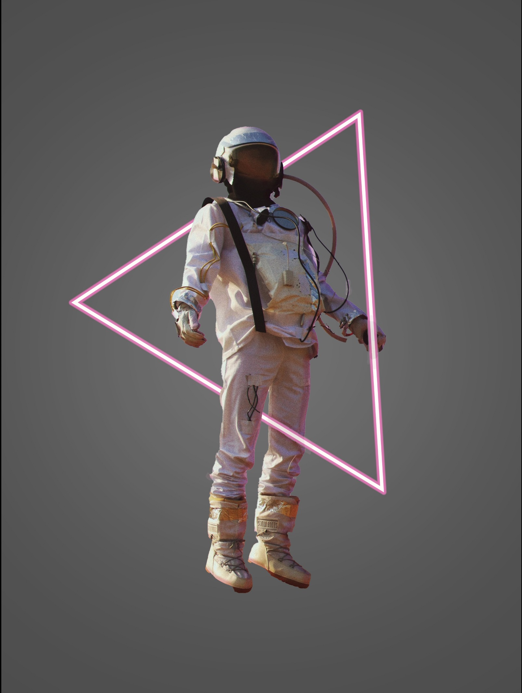

Travaux académiques · 2016–2024
Projets scolaires de design
Mise en page éditoriale, exploration d'image de marque et de logo, et études de présentation produites au fil de deux programmes de design — regroupées ici comme un seul corpus de travail académique plutôt qu'en pièces individuelles dispersées.
Aperçu
Avant tout travail client ou d'employeur, il y a eu deux programmes remplis d'exercices — typographie, mise en page, image de marque et présentation — qui ont bâti la base sur laquelle tout le reste s'est appuyé depuis.
Cette page regroupe en un seul endroit les travaux de cours auparavant présentés comme plusieurs entrées de portfolio distinctes — mises en page éditoriales, études de logo, publicité extérieure, et exercices de présentation et de composition. Il s'agit de travail académique, et non de travail client : des travaux, des briefs et des études autodirigées produits pendant un DEP en Graphisme et une AEC en Graphisme et design Web. Regroupés ensemble, ils se lisent moins comme une liste de pièces disparates et davantage comme ce qu'ils étaient réellement — deux années de formation structurée et pratique aux fondamentaux.
Écoles et programmes
-
2016–2018
Graphisme DEP
Centre Bernard-Gariépy (CBG) — Sorel-Tracy
Formation de base au métier du design, à la typographie, et à la discipline de la mise en page. Visiter le site de l'école →
-
2023–2024
Graphisme et design Web AEC
John Abbott College
Méthodes numériques, fondements du web, et communication visuelle contemporaine. Visiter le site de l'école →
Édition, impression et mise en page
Exercices de typographie et de grille appliqués à des formats réels — une infolettre, un billet d'événement, de la publicité extérieure, et un dépliant promotionnel.


Exploration d'image de marque et de logo
Études d'identité — logotypes, monogrammes et concepts de logo pour différents briefs fictifs, ainsi qu'un exercice d'emballage pour une marque de confiserie.


Présentation, maquettes et travail de composition
Exercices de présentation et de composition — intégrer un travail terminé dans des scènes réalistes, et des études autonomes de manipulation photo pratiquant les mêmes techniques de superposition et d'éclairage.

.png)


Ce que ces programmes m'ont appris
- La discipline de la typographie et de la grille avant tout — ce qui ressemble plus tard à du « style » est en réalité une structure bien exécutée dès le départ.
- Le travail de logo et d'identité profite de la génération de nombreuses directions avant de restreindre — d'abord la quantité d'exploration, puis une sélection sans compromis.
- La présentation compte autant que le design lui-même : un concept fort dans une maquette faible se lit comme un concept faible.
- Deux programmes différents, deux accents différents — la base axée sur le métier du CBG et la couche numérique/web de John Abbott — m'ont donné une boîte à outils plus complète que l'un ou l'autre seul ne l'aurait fait.